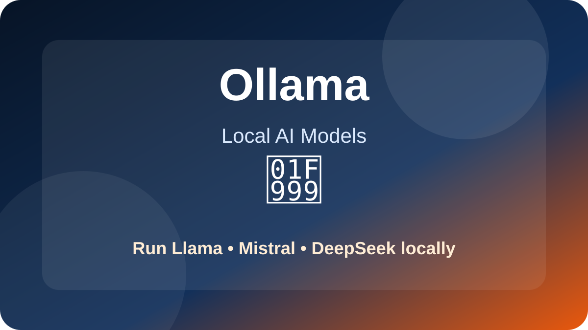
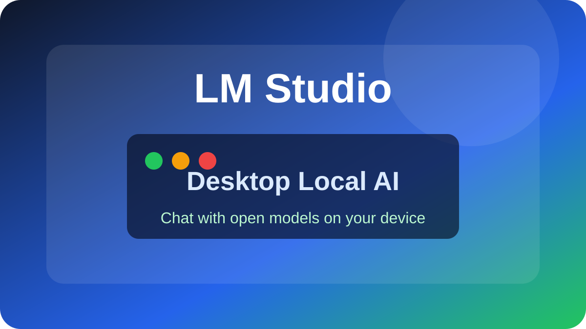
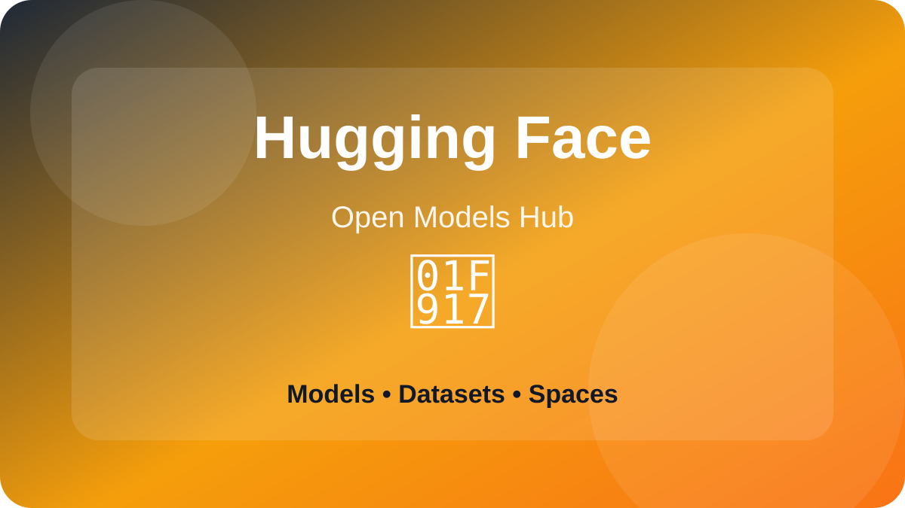
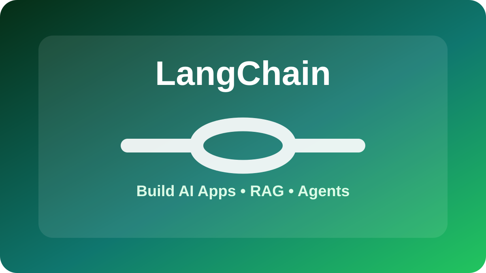
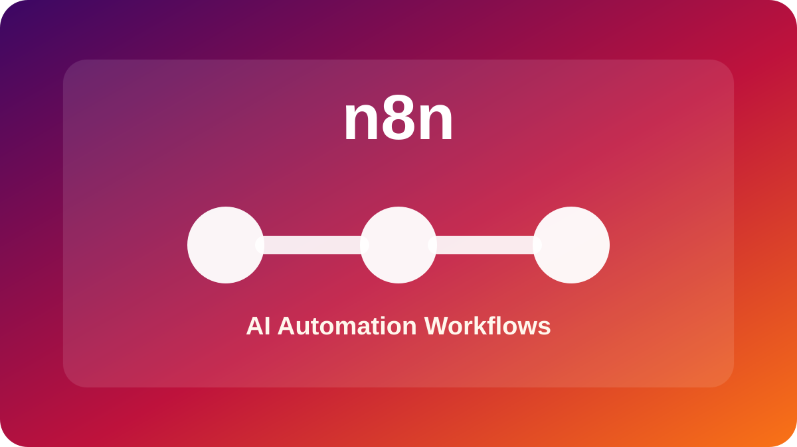
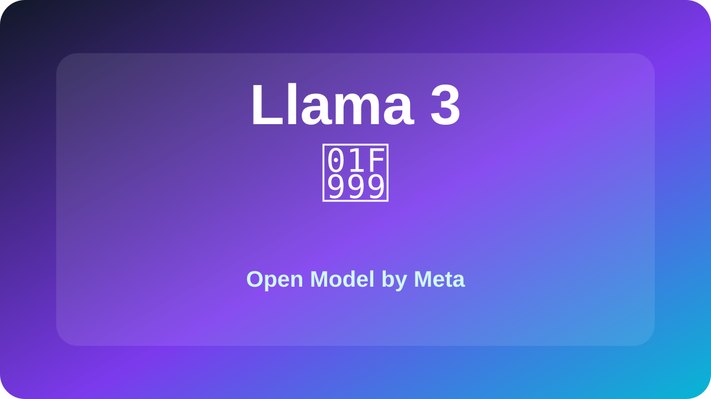
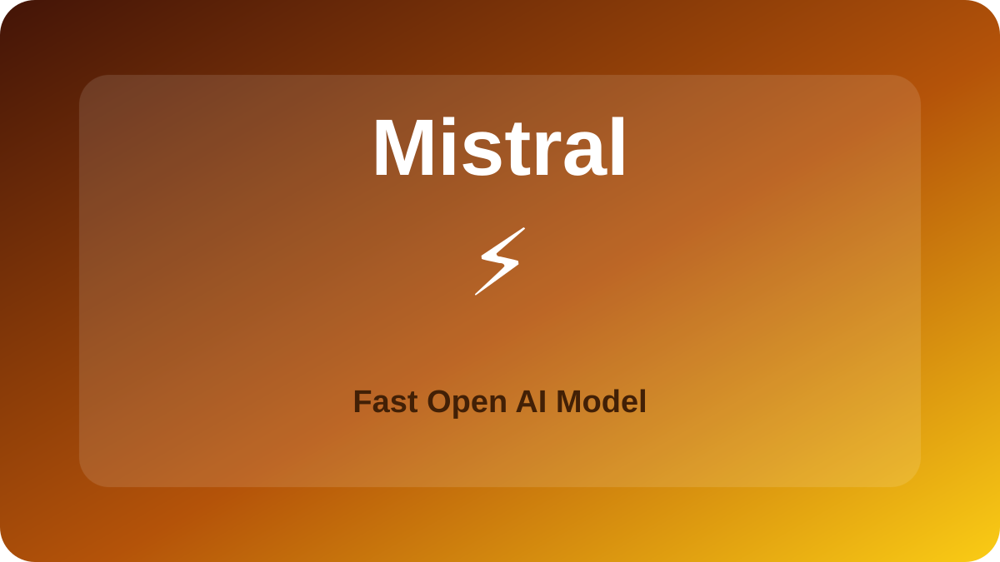
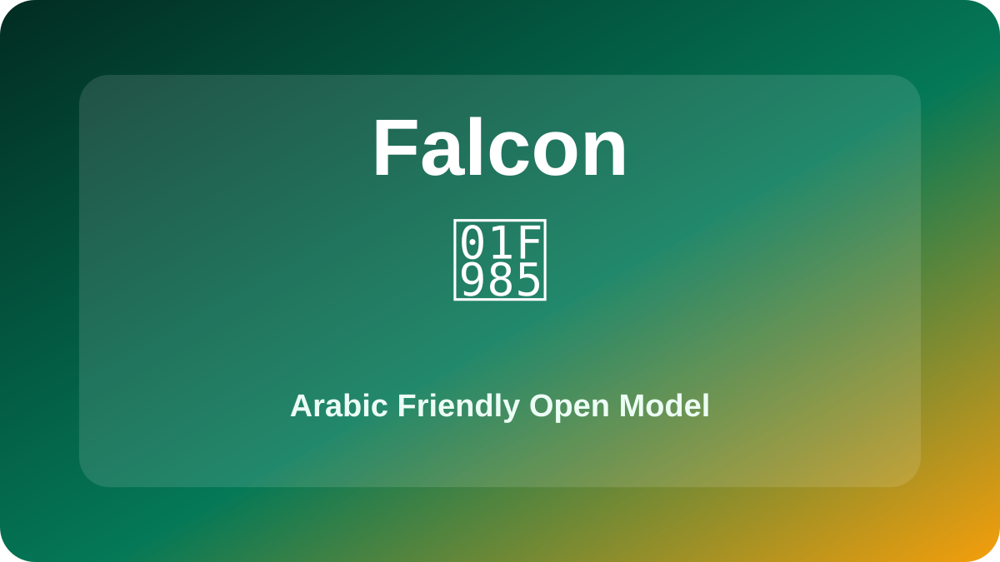
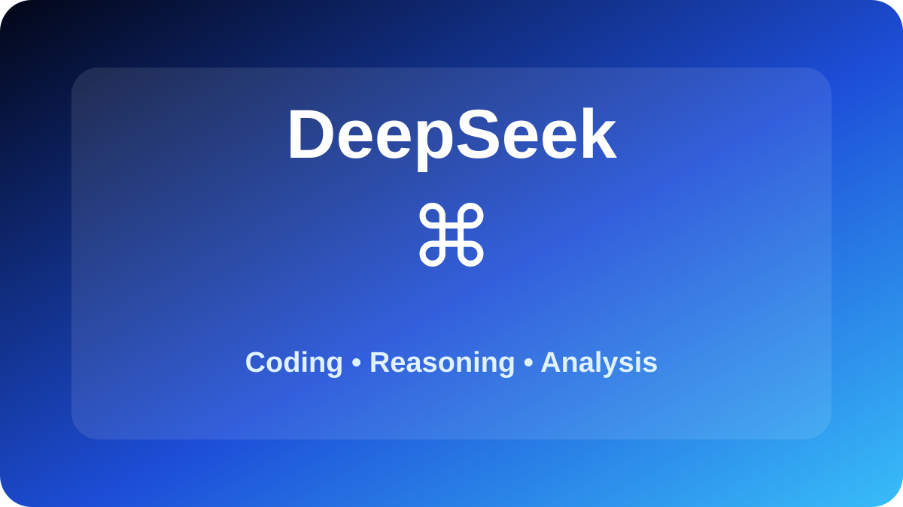

دليل Ollama
تشغيل Llama وMistral وDeepSeek ونماذج أخرى محليًا.
اقرأ المقال →شغّل النماذج محليًا وابنِ مشاريع AI خاصة بك باستخدام أدوات مفتوحة ومناسبة للتجربة والتطوير.
تم ربط المقالات المنشورة داخل المستودع في صفحة واحدة.

تشغيل Llama وMistral وDeepSeek ونماذج أخرى محليًا.
اقرأ المقال →
واجهة سهلة لتجربة النماذج المفتوحة على جهازك.
اقرأ المقال →
اكتشاف النماذج المفتوحة ومقارنتها قبل الاستخدام.
اقرأ المقال →
بناء تطبيقات AI وربط النماذج بالملفات والبيانات.
اقرأ المقال →
أتمتة workflows وربط أدوات AI بالمحتوى والتسويق.
اقرأ المقال →
نموذج مفتوح قوي للتجارب المحلية والاستخدام العملي.
اقرأ المقال →
نموذج خفيف وسريع مناسب للتجربة والاستخدام المحلي.
اقرأ المقال →
نموذج إماراتي مفتوح المصدر مع تركيز جيد على اللغة العربية.
اقرأ المقال →
استخدام DeepSeek في البرمجة والتحليل والتفكير التقني.
اقرأ المقال →ابدأ بالتشغيل المحلي، ثم اكتشاف النماذج، ثم بناء التطبيقات والأتمتة.
Hugging Face مع Llama وMistral وFalcon وDeepSeek.